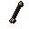
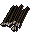
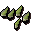

Ogre arrow

| Config name | ogre_arrow |
| Item id | 2866 |
| Value | 25 gp |
| Weight | 16g |
| Members | Yes |
| Tradeable | Yes |
| Stackable | Yes |
| Equip slot | quiver |
| Options | Wield |
| Category | ogre_arrows |
| Level required | 30 |
| Defined in | scripts/skill_fletching/configs/ogre/ogre_arrows.obj |
| Equipment stats | Ranged str 22 |
Ogre arrow
A large ogre arrow with a bone tip.
How to make
| Skill | Level | XP | Ingredients | Tool | How | Where | Makes |
|---|---|---|---|---|---|---|---|
| Fletching | 5 | 1.0 |  Flighted ogre arrow ×6, Wolfbone arrowtips ×6 | use on item | ×6 members; up to 6 per action; requires Big Chompy Bird Hunting (%chompybird) |
Quests
Referenced in scripts
scripts/quests/quest_chompybird/scripts/chompy_bird.rs2scripts/quests/quest_chompybird/scripts/rantz.rs2scripts/skill_combat/scripts/player/player_ranged.rs2scripts/skill_combat/scripts/pvp/pvp_ranged.rs2scripts/skill_fletching/scripts/ogre_arrows.rs2